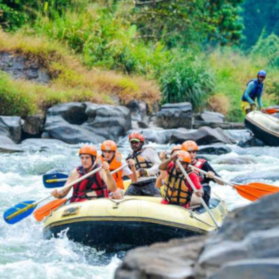

White water rafting

White Water Rafting is becoming popular a adventurous activity many tourists like to love. No other activity could give this thrilling experience when your in a raft rowing for your life with few others through the river currents across the wild jungle. the expereince you get from this journey will give the confidence you need for a lifetime.
Rates and additional information:
Price :60-65 USD per Person
Duration: 4 Hours
Drive from Colombo :3 and a half Hours
Snorkeling
Sri lanka is a tropical paradise blessed with the most beautiful beaches and but only a people few people know the amazing environment underneath the ocean. The blue mixed green environment with coral reefs and a habitat to more than 1000 species of fish roaming around calms one's soul and mind.
Rates and additional information:
Price :50-55 USD per Person
Duration: 4 Hour and 15 Minutes
Drive from Colombo:5 Hours
SAFARI
.jpg)
Sri Lankan wildlife safari is an experience a person would never forget. If your an adventorous person who like to snap your cameras at wild animals this safari is meant for you. Get in board in your Offroad Safari jeep and travel through the rugged dry terraain while looking at more 200 plus species of animals from reptiles,birds and to mammals. If your lucky enough you might even find the Rare Sri lankan leopard.
Rates and additional information:
Pricing :40-45 USD per Person
Duration: 6+ Hours
Drive from Colombo:6 Hours